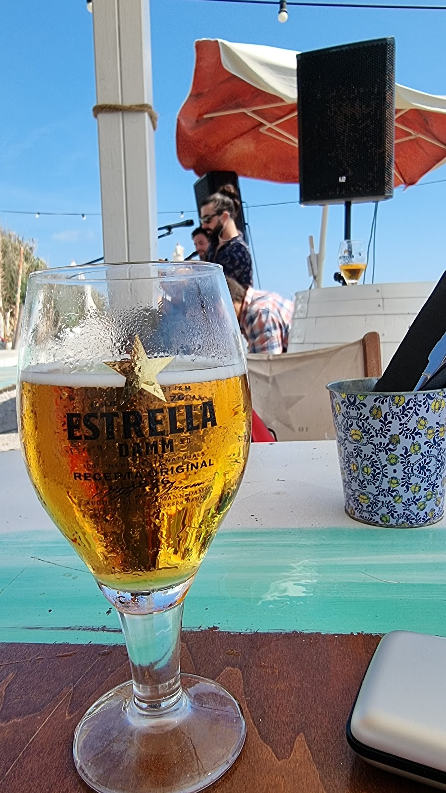
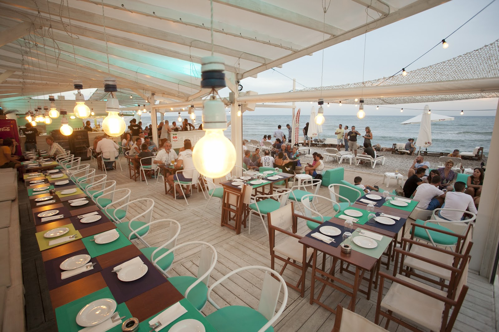
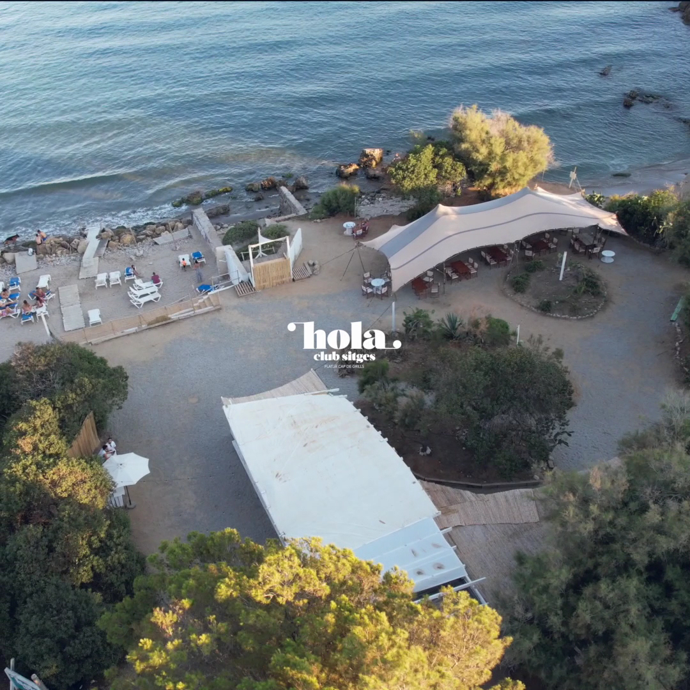
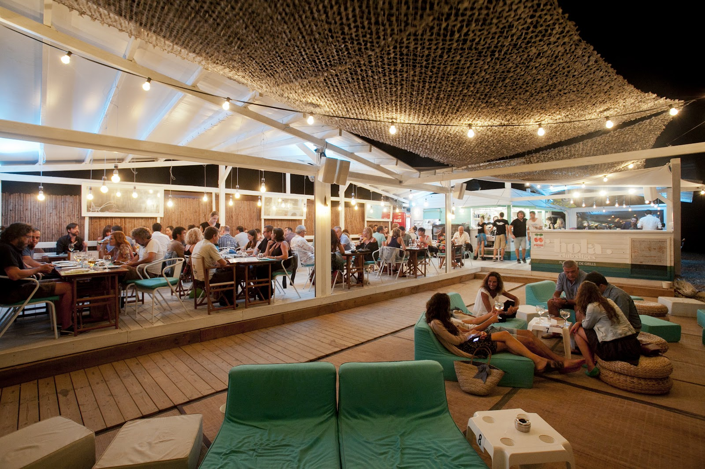

Beach club de día, fiesta de noche. A pie de cala, con sonido Funktion-One frente al mar.Beach club by day, party by night. Right on the cove, with Funktion-One sound by the sea.
Una cala única entre Barcelona y Sitges. Comes con los pies en la arena y te quedas a bailar techno-house y afro al atardecer. Producto de calidad, mojitos y muy buen rollo.A one-of-a-kind cove between Barcelona and Sitges. Eat with your feet in the sand and stay to dance techno-house & afro at sunset. Quality food, mojitos and a great vibe.



